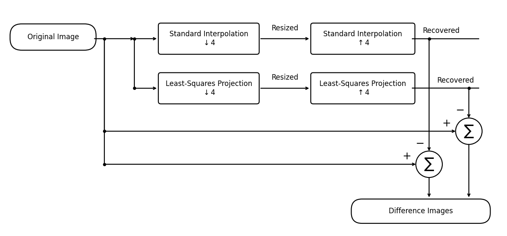
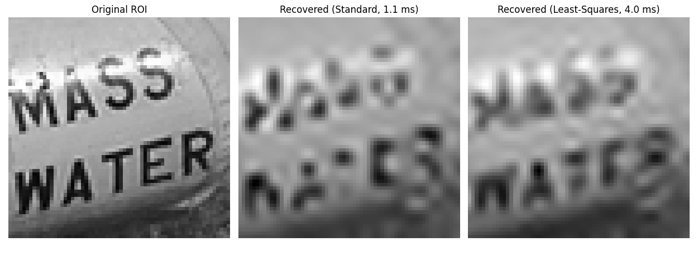
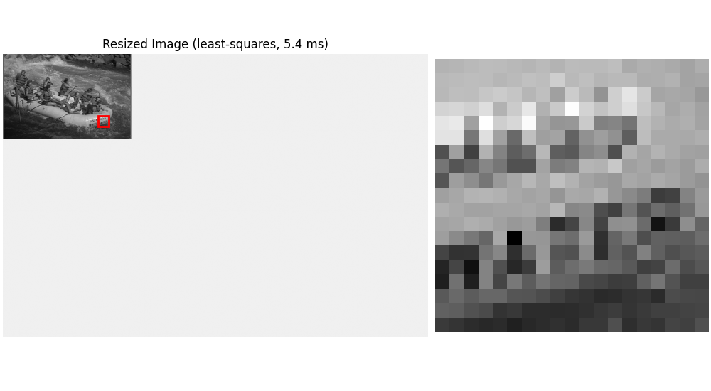
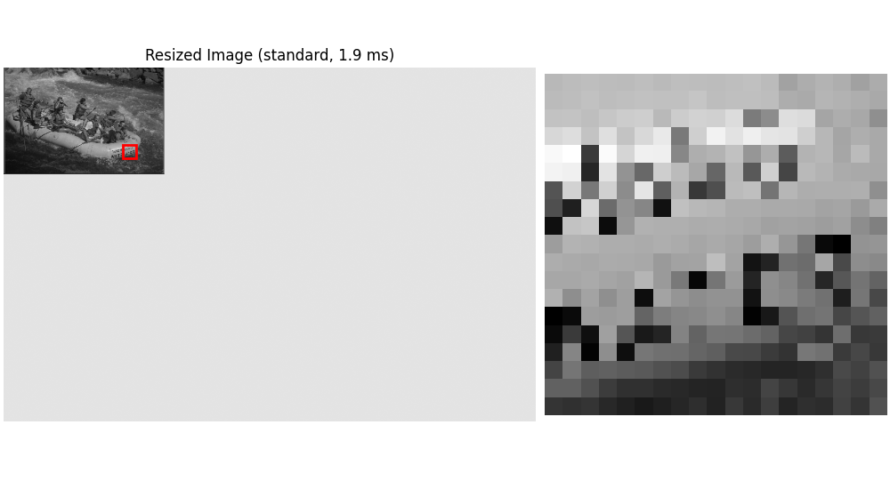
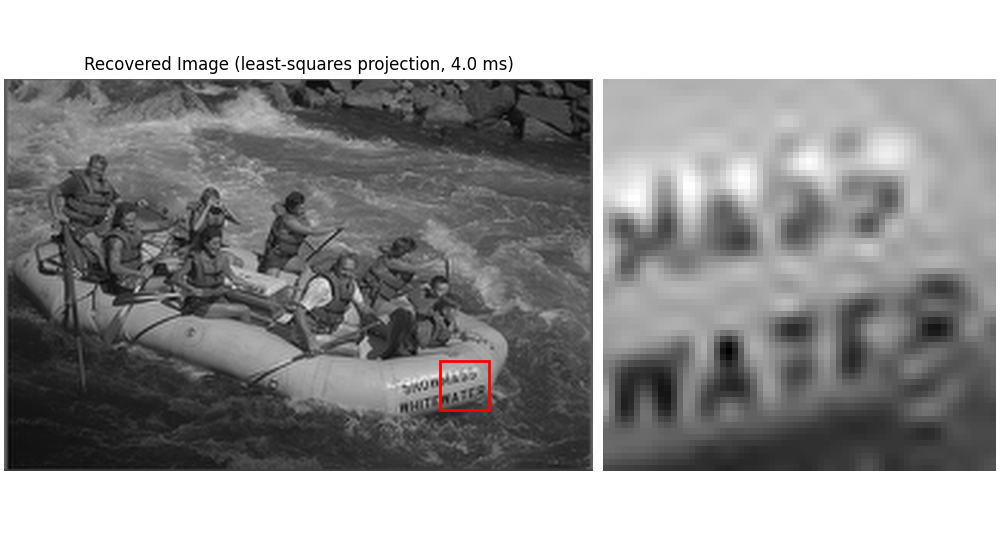
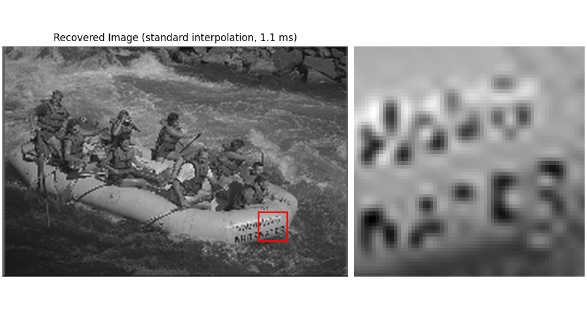
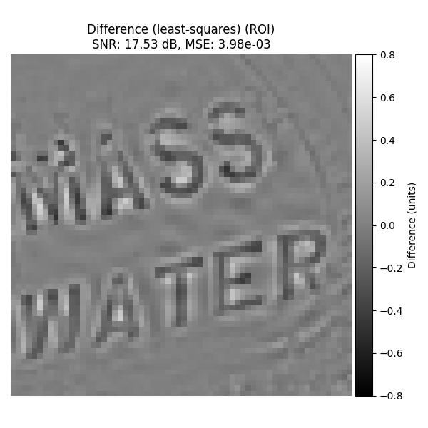
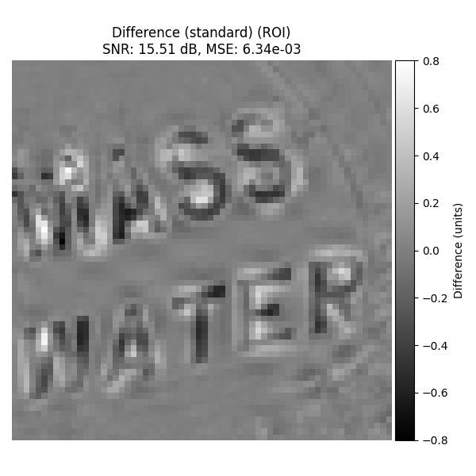

Least-Squares Projection#
Interpolate 2D images with least-squares projection. Compare them to standard interpolation. We compute SNR and MSE only on a central region to exclude boundary artifacts.
Imports#
import numpy as np
import time
from urllib.request import urlopen
from PIL import Image
import matplotlib.pyplot as plt
from scipy.ndimage import zoom as _scipy_zoom # only if you want extra comparisons
from splineops.resize import resize
from splineops.utils.metrics import compute_snr_and_mse_region
from splineops.utils.plotting import plot_difference_image, show_roi_zoom
from splineops.utils.diagram import draw_standard_vs_leastsq_pipeline
def fmt_ms(seconds: float) -> str:
"""Format seconds as a short 'X.X ms' string."""
return f"{seconds * 1000.0:.1f} ms"
Pipeline Diagram#
_ = draw_standard_vs_leastsq_pipeline(
include_upsample_labels=True,
width=12.0
)

Load and Normalize an Image#
url = 'https://r0k.us/graphics/kodak/kodak/kodim14.png'
with urlopen(url, timeout=10) as resp:
img = Image.open(resp)
data = np.array(img, dtype=np.float64)
# Convert to [0..1] + grayscale
input_image_normalized = data / 255.0
input_image_normalized = (
input_image_normalized[:, :, 0] * 0.2989 + # Red channel
input_image_normalized[:, :, 1] * 0.5870 + # Green channel
input_image_normalized[:, :, 2] * 0.1140 # Blue channel
)
h_img, w_img = input_image_normalized.shape
# Shared parameters
zoom = np.e / 9 # ≈ 0.3020313142732272
zoom_factors_2d = (zoom, zoom)
border_fraction = 0.3 # central crop for SNR/MSE
ROI_SIZE_PX = 64
# Face-centered 64×64 ROI (for visual comparisons)
FACE_ROW, FACE_COL = 400, 600 # (row, col) approx center of the detail
# Top-left of the 64×64 box, clipped to stay inside the image
row_top = int(np.clip(FACE_ROW - ROI_SIZE_PX // 2, 0, h_img - ROI_SIZE_PX))
col_left = int(np.clip(FACE_COL - ROI_SIZE_PX // 2, 0, w_img - ROI_SIZE_PX))
roi_rect = (row_top, col_left, ROI_SIZE_PX, ROI_SIZE_PX) # (r, c, h, w)
roi_kwargs = dict(
roi_height_frac=ROI_SIZE_PX / h_img, # keeps height at 64 px (square ROI)
grayscale=True,
roi_xy=(row_top, col_left), # top-left of the ROI
)
# Mapping for resized-space ROI (used by both resized displays)
zoom_r, zoom_c = zoom_factors_2d
center_r_res = int(round(FACE_ROW * zoom_r))
center_c_res = int(round(FACE_COL * zoom_c))
roi_h_res = max(1, int(round(ROI_SIZE_PX * zoom_r)))
roi_w_res = max(1, int(round(ROI_SIZE_PX * zoom_c)))
Standard Interpolation#
t0 = time.perf_counter()
resized_2d_std = resize(
input_image_normalized,
zoom_factors=zoom_factors_2d,
method="cubic",
)
t1 = time.perf_counter()
recovered_2d_std = resize(
resized_2d_std,
output_size=input_image_normalized.shape,
method="cubic",
)
t2 = time.perf_counter()
time_2d_std_fwd = t1 - t0 # forward resize (down/up)
time_2d_std_back = t2 - t1 # backward resize (return to original size)
time_2d_std = t2 - t0 # total pipeline time
# SNR/MSE on central region (no ROI cropping here)
snr_2d_std, mse_2d_std = compute_snr_and_mse_region(
input_image_normalized,
recovered_2d_std,
border_fraction=border_fraction,
)
Least-Squares Projection#
t0 = time.perf_counter()
resized_2d_ls = resize(
input_image_normalized,
zoom_factors=zoom_factors_2d,
method="cubic-best_antialiasing",
)
t1 = time.perf_counter()
recovered_2d_ls = resize(
resized_2d_ls,
output_size=input_image_normalized.shape,
method="cubic-best_antialiasing",
)
t2 = time.perf_counter()
time_2d_ls_fwd = t1 - t0
time_2d_ls_back = t2 - t1
time_2d_ls = t2 - t0
snr_2d_ls, mse_2d_ls = compute_snr_and_mse_region(
input_image_normalized,
recovered_2d_ls,
border_fraction=border_fraction,
)
ROI Comparison#
Build a quick ROI triptych (nearest-neighbour magnification) from the recovered images for visual comparison.
def _nearest_big(roi: np.ndarray, target_h: int) -> np.ndarray:
h, w = roi.shape
mag = max(1, int(round(target_h / h)))
return np.repeat(np.repeat(roi, mag, axis=0), mag, axis=1)
roi_orig = input_image_normalized[row_top:row_top+ROI_SIZE_PX, col_left:col_left+ROI_SIZE_PX]
roi_std = recovered_2d_std[row_top:row_top+ROI_SIZE_PX, col_left:col_left+ROI_SIZE_PX]
roi_ls = recovered_2d_ls[row_top:row_top+ROI_SIZE_PX, col_left:col_left+ROI_SIZE_PX]
DISPLAY_H = 256
roi_big_orig = _nearest_big(roi_orig, DISPLAY_H)
roi_big_std = _nearest_big(roi_std, DISPLAY_H)
roi_big_ls = _nearest_big(roi_ls, DISPLAY_H)
fig, axes = plt.subplots(1, 3, figsize=(12.5, 4.6))
titles = [
"Original ROI",
f"Recovered (Standard, {fmt_ms(time_2d_std_back)})",
f"Recovered (Least-Squares, {fmt_ms(time_2d_ls_back)})",
]
for ax, im, title in zip(
axes,
[roi_big_orig, roi_big_std, roi_big_ls],
titles,
):
ax.imshow(im, cmap="gray", interpolation="nearest")
ax.set_title(title)
ax.axis("off")
ax.set_aspect("equal")
fig.tight_layout()
plt.show()

Original with ROI#
_ = show_roi_zoom(
input_image_normalized,
ax_titles=("Original Image", None),
**roi_kwargs
)
Resized Images#
Least-Squares Projection#
h_res_ls, w_res_ls = resized_2d_ls.shape
row_top_res_ls = int(np.clip(center_r_res - roi_h_res // 2, 0, h_res_ls - roi_h_res))
col_left_res_ls = int(np.clip(center_c_res - roi_w_res // 2, 0, w_res_ls - roi_w_res))
canvas_ls = np.ones((h_img, w_img), dtype=resized_2d_ls.dtype) # white background in [0,1]
canvas_ls[:h_res_ls, :w_res_ls] = resized_2d_ls
roi_kwargs_on_canvas_ls = dict(
roi_height_frac=roi_h_res / h_img,
grayscale=True,
roi_xy=(row_top_res_ls, col_left_res_ls),
)
_ = show_roi_zoom(
canvas_ls,
ax_titles=(
f"Resized Image (least-squares, {fmt_ms(time_2d_ls_fwd)})",
None,
),
**roi_kwargs_on_canvas_ls
)

Standard Interpolation#
h_res_std, w_res_std = resized_2d_std.shape
row_top_res_std = int(np.clip(center_r_res - roi_h_res // 2, 0, h_res_std - roi_h_res))
col_left_res_std = int(np.clip(center_c_res - roi_w_res // 2, 0, w_res_std - roi_w_res))
canvas_std = np.ones((h_img, w_img), dtype=resized_2d_std.dtype)
canvas_std[:h_res_std, :w_res_std] = resized_2d_std
roi_kwargs_on_canvas_std = dict(
roi_height_frac=roi_h_res / h_img,
grayscale=True,
roi_xy=(row_top_res_std, col_left_res_std),
)
_ = show_roi_zoom(
canvas_std,
ax_titles=(
f"Resized Image (standard, {fmt_ms(time_2d_std_fwd)})",
None,
),
**roi_kwargs_on_canvas_std
)

Recovered Images#
Least-Squares Projection#
_ = show_roi_zoom(
recovered_2d_ls,
ax_titles=(
f"Recovered Image (least-squares projection, {fmt_ms(time_2d_ls_back)})",
None,
),
**roi_kwargs
)

Standard Interpolation#
_ = show_roi_zoom(
recovered_2d_std,
ax_titles=(
f"Recovered Image (standard interpolation, {fmt_ms(time_2d_std_back)})",
None,
),
**roi_kwargs
)

Difference Images#
Least-Squares Projection#
Difference with original image on ROI (SNR/MSE numbers are from the central-region metrics computed earlier).
plot_difference_image(
original=input_image_normalized,
recovered=recovered_2d_ls,
snr=snr_2d_ls,
mse=mse_2d_ls,
roi=roi_rect,
title_prefix="Difference (least-squares)",
)

Standard Interpolation#
Difference with original image on ROI.
plot_difference_image(
original=input_image_normalized,
recovered=recovered_2d_std,
snr=snr_2d_std,
mse=mse_2d_std,
roi=roi_rect,
title_prefix="Difference (standard)",
)

Performance Comparison#
As a compact summary, we print a table with:
SNR / MSE on the central region (via border_fraction),
total (forward + backward) timing of the interpolation pipeline.
This lets you see the cost/benefit trade-off between standard interpolation and least-squares projection.
methods = [
("Standard Interpolation (cubic)", snr_2d_std, mse_2d_std, time_2d_std),
("Least-Squares Projection", snr_2d_ls, mse_2d_ls, time_2d_ls),
]
header_line = f"{'Method':<32} {'SNR (dB)':>10} {'MSE':>16} {'Time (s)':>12}"
print(header_line)
print("-" * len(header_line))
for name, snr_val, mse_val, t in methods:
print(
f"{name:<32} "
f"{snr_val:>10.2f} "
f"{mse_val:>16.2e} "
f"{t:>12.4f}"
)
Method SNR (dB) MSE Time (s)
-------------------------------------------------------------------------
Standard Interpolation (cubic) 15.51 6.34e-03 0.0030
Least-Squares Projection 17.53 3.98e-03 0.0094
Total running time of the script: (0 minutes 2.959 seconds)